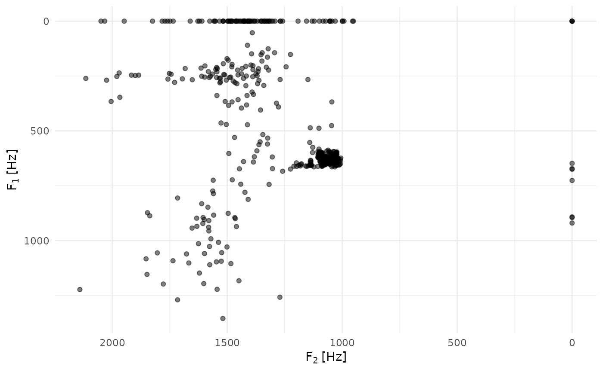

Create ggplot with automatic track labels
ggtrack.RdCreates a ggplot2 plot with automatic axis labels derived from track names.
This is a convenience wrapper around ggplot() that automatically extracts
and applies appropriate labels for acoustic track data.
Usage
ggtrack(
data,
mapping = ggplot2::aes(),
...,
full_labels = FALSE,
use_subscripts = TRUE
)Arguments
- data
data.frame, tibble,
AsspDataObjorJsonTrackObj. Track data, either as a table fromas.data.frame.AsspDataObj()or as the object itself.- mapping
ggplot2::aes() specification. Aesthetic mappings.
- ...
Additional ggplot2 layers to add (geoms, scales, themes, etc.).
- full_labels
Logical. If TRUE, use full descriptive labels. If FALSE (default), use short labels suitable for plot axes.
- use_subscripts
Logical. If TRUE (default), use plotmath expressions with subscripts (fo and F1 rendered with subscript digits). If FALSE, use plain text.
Details
This function simplifies plotting of acoustic track data by automatically
generating appropriate axis labels based on column names. It extracts the
x and y variables from the aesthetic mapping and applies labels using
get_track_label().
When no mapping is given, the axes are labelled for the layers this package
provides: x becomes "Time s" for a table with a frame_time column, and
y becomes the track label when the data holds exactly one track
(ggtrack(rms) + geom_track()).
Short labels (full_labels = FALSE, default):
"fo [Hz]", "F1 [Hz]", "H1-H2c [dB]"
Concise, suitable for most plots Full labels (full_labels = TRUE):
"Frequency of oscillation [Hz]"
"First formant frequency [Hz]"
"H1-H2 corrected for formants [dB]"
Descriptive, suitable for publications Additional layers can be added using the
...argument or by adding to the returned ggplot object with+.
See also
geom_track()andgeom_spectrogram()for the layers to combine withas.data.frame.AsspDataObj()for the wide track tableget_track_label()for label extractionggplot2::ggplot()for the underlying plotting function
Examples
wav <- system.file("samples", "sustained", "a1.wav", package = "superassp")
# \donttest{
if (requireNamespace("ggplot2", quietly = TRUE)) {
library(ggplot2)
# tracks of the object, labels taken from the track metadata
f0 <- trk_pitch_ksv(wav, toFile = FALSE, verbose = FALSE)
ggtrack(f0) + geom_track()
# y-axis: "fo [Hz]"
# a spectrogram of a spectrum track
dft <- trk_dft_spectrum(wav, toFile = FALSE, verbose = FALSE)
ggtrack(dft) + geom_spectrogram() + labs(y = "Frequency [Hz]")
# the wide table with a column-wise mapping. convert_units = FALSE keeps
# the columns plain numeric; unit-assigned columns are "units" objects,
# which ggplot2 can only scale with the units package attached.
fms <- trk_formant_forest(wav, numFormants = 3, toFile = FALSE, verbose = FALSE)
df_fms <- as.data.frame(fms, convert_units = FALSE)
ggtrack(df_fms, aes(x = F2_Hz, y = F1_Hz)) +
geom_point(alpha = 0.5) +
scale_x_reverse() +
scale_y_reverse() +
theme_minimal()
# Automatic labels: "F1 [Hz]", "F2 [Hz]"
}

# }